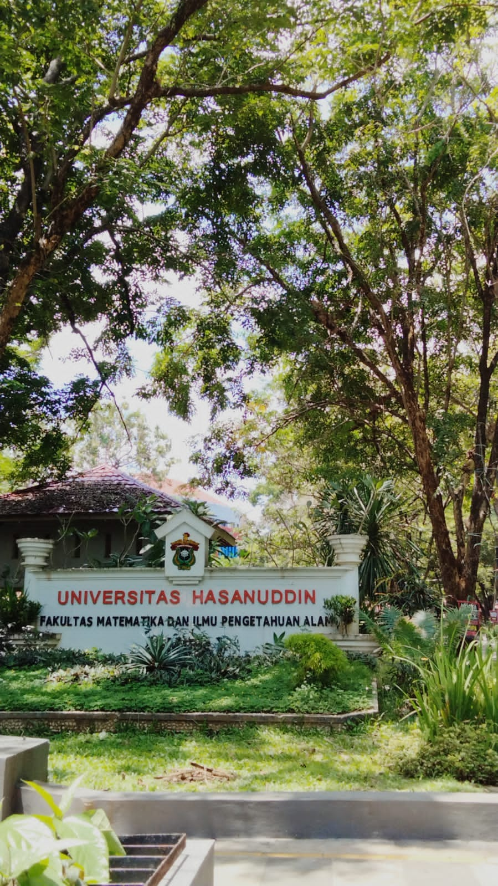

| About Me | Faculty | Country |
|  |
FMIPA Universitas Hasanuddin resmi berdiri tanggal 17 Agustus 1963 dengan nama Fakultas Ilmu Pasti dan Ilmu Pengetahuan Alam (FIPPA). Saat itu FIPPA memiliki empat jurusan yaitu : Matematika, Fisika, Kimia dan Biologi. Dalam perkembangannya, FIPPA menambah satu jurusan, yaitu Farmasi sehingga terdiri atas lima jurusan. Pada Tahun 1977, FIPPA dan Fakultas Teknik disatukan dalam satu Fakultas bernama Fakultas Sains dan Teknologi. Enam tahun berselang tepatnya 1983, fakultas gabungan tersebut dimekarkan. Bidang Sains menjadi Fakultas Matematika dan Ilmu Pengetahuan Alam (FMIPA), sedangkan bidang teknologi kembali menjadi Fakultas Teknik. Dengan berubahnya Jurusan Farmasi menjadi Fakultas dalam tahun tahun 2005, maka sejak itu FMIPA kembali terdiri atas 4 jurusan, seperti awal didirikan. Kini Fakultas Matematika dan Ilmu pengetahuan Alam Universitas Hasanuddin telah memiliki 8 jurusan, yakni Matematika, Fisika, Kimia, Biologi, Statistika, Geofisika, Sistem Informasi, dan Aktuaria. Visi dari Fakultas MIPA UNHAS adalah : "Menjadikan Fakultas Matematika dan Ilmu Pengetahuan Alam sebagai pusat pengembangan pendidikan tinggi Sains Alamiah Dasar dengan dukungan matematika yang dapat menopang perkembangan ilmu pengetahuan teknologi dan seni untuk kesejahteraan manusia" Misi dari Fakultas MIPA UNHAS adalah :
|